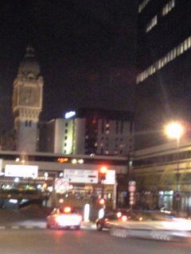
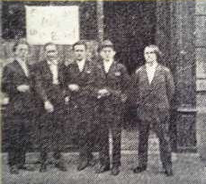
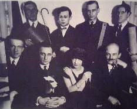
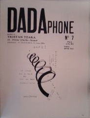
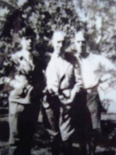
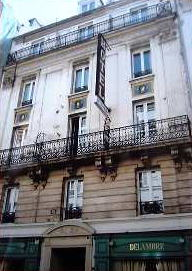
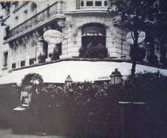
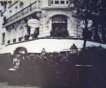
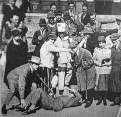
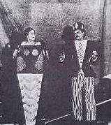

| 年号 |
月 日 |
|
年齢 |
|
内容 |
| 1920 |
1/17 |
|
23 |
|
ツァラ、パリのエミール・オージェ通りのピカビアの愛人
ジェルメーヌ・エヴァリングのアパルトマンに唐突に到着。本当は1/6日の約束だったが、ツァラは第一次世界大戦下の状況で、ドイツ方面からの旅行者に対
してフランス当局が警戒を強めていたために約束通り到着することができなかった。10日付けの、ピカビアからブルトンへの手紙では、ツァラがパスポートの
問題で来れなくなったらしいということが書かれている。ブルトンと「Litterature」グループの青年たちは7日も8日もリヨン駅でツァラを待ち、
9日には「ヨウカノバンハザンネン オイデナラデンポウサレタシ」と、まだチューリヒを発っていなかったツァラに電報を打っている。
|  |
 |
 |
|
↑
「Litterature」のメンバーたち。（左からアンドレ・ブアルトン、フィリップ・スーポー、ジャック・リゴー、ベンジャマン・ペレ、シャルシェン
ヌ。もちろんここに写っている以外にもメンバーはいる。） |
|
| 夜のリヨン駅 |
|
アンドレ・ブルトン |
この日はじめてツァラと「Litterature」のメンバーは顔をあわせるのだが、そのときの印象はあまり良いものではなかったらしい。（プ
ロフィールページ、「外見について」参照）「フランス語が下手で、パリに到着したと言っているこ
と
がやっとのことで分かった。私は彼が『ダダ』の二音節を恐ろしく早く発音していたのを思い出す。それをパリで発音しているように教えたのはテオドール・フ
ランケルだった」とルイ・アラゴンは回想している。 |
|  |
|
 |
後列左からシャドゥルヌ、ツァラ、シャルシェ
ンヌ
前列左からブルトン、ポール・エリュアールとその夫人、
リブモン・デセーニュ。マン・レイ写す。 |
|
ツァラのクローズアップ |
|
| 1/23 |
|
" |
|
サロン・デ・ザンデパダンで「『Litterature』誌最初の金曜日の集い」
（ちなみに二回目の集いは開かれなかった）が開かれる。これがパリでのツァラの初舞台となる。
「その時、アラゴンが登場して、ツァラの騒がしい詩「Lepreux du
paysage」を大声で朗読し、その後でこう告げた――”大ニュースです。チューリヒからやってきた本物のダダが皆さんの前で作品を発表します。”会場
はたちまち静まり返った。やがてツァラがゆっくりと姿を現し、レオン・ドーデの国会での演説を読み上げた。」（ミシェル・サヌイエ）
ツァラがレオン・ドーデの国会演説を読み始めると同時に舞台の袖でブルトンとアラゴンが呼び鈴を鳴らし始める。落ち着きかけていた場内はまたいっぺんに
騒然となった。呼び鈴はツァラの訛りを隠すためだったが、それでもかれのｒ音が雄弁に響いたせいで、あらゆる外国語訛りはドイツの手先と考えていた連中の
憤慨もかきたてた。
この日は、アンドアレ・サルモンの「変化の危機（Crise de
change）」を「為替の危機(Crise de
change）と勘違いした近所の商人たちも多くあつまり、またデュシャンの「L.H.O.O.Q」という文字を描き入れたピカビアの絵が展示されるに及
んで、場内が大騒ぎとなった。 |
| 5/26 |
|
24 |
|
フェスティバル・ダダが、シャンゼリゼ通りに近いカヴォー・ホールで開催され
る。このホールはクラシック音楽のコンサートによく使われるところだった。前評判も良く会場は満員で、観客の中にはジッド、ヴァレリー、リヴィエール、
デュアメル、レジェらの姿も見られた。
幕があがると、舞台の中央に白い紙でつくられた巨大な円柱状の「ダダのセックス」が登場する。会場は大騒ぎである。騒々しい雰囲気の中でプログラムは進
行し、ツァラの『アンチピリン氏の第二回天上冒険』、ブルトンとスーポーの『シルヴプレ』などの寸劇が演じられ、アラゴンやリブモン・デセーニュの宣言
「システムＤＤ」、ピカビアの「私はジャヴァ人」などが朗読され、ペレが客席の真ん中から「フランス万歳！フライドポテト万歳！」と叫んだりした。
観客は腹を立て生卵やトマトや腐りかけたオレンジをダダイストめがけて投げつけたり、有名な女優でピカビアと一緒に見物に来ていたマルト・シュナルに
ラ・マルセイエーズ（国歌）を歌えとけしかけたりした。第一次大戦直後だったこともあって、「愛国者」であった彼らはルーマニア国籍の外国人ツァラに馬鹿
にされたと思ったのである。最後にツァラの「交響楽的なワセリン」を20人で合唱し、イベントは大混乱のうちに幕切れとなった。
|

ピカビアの宣言を読むブルトン |
|
| 5 |
|
" |
|
雑誌「BULLETIN DADA」（DADA6号）と「DADAPHONE」
（DADA7号）が続けて出版される。
 |
 |
|
| 5/31 |
|
" |
|
モーリス・バレス裁判が行われる。このイベントで、ツァラとブルトンの
間の溝が決定的なものとなる。
 左から四人目がツァラ 左から四人目がツァラ |
|
| 6 |
|
" |
|
詩集「Cinema Calendrier du Coeur
Abstrait Maisons（シネマ・抽象的心のカレンダー＆メゾン）を、アルプの挿絵つきで刊行。 |
| 12 |
|
" |
|
ピカビアの展覧会のために「Dada Manifeste Sur
l'Amour Faible et l'Amour Amer（弱き恋と苦き愛についてのダダ宣言）」が書かれる。この宣言はパリ・ダダ時代に
おけるツァラの最良の仕事とされている。 |
|
| 1921 |
5 |
|
25 |
|
ひとつのダダイベントとしてダダの葬儀が行われるが、ツァラは参加して
いないと思われる。
ブルトン「ダダは、じつに幸運なことにもはや問題にならず、1921年の5月頃に行われたその葬儀は、何の騒ぎも引き起こさなかった。ごく少数の葬列は、
キュビズムや未来派の葬列のあとをたどり、その肖像は美術学校の生徒たちによってセーヌ河で溺死させられた。（中略）ダダイズムは、その他の多くの事柄同
様、ある種の人びとにとって、たんなる椅子の座り方にすぎなかった。われわれは、何ごとかを深く追求することをわれわれに禁じる、一種の精神的ものまねに
服従させられ、われわれにとって一番大事なものを、敵意をこめて見つめざるをえなかった。」 |
| 7 |
|
" |
|
22日にマン・レイがパリに到着するが、ツァラはチェコスロヴァキアに旅行に出かけて
いて出迎えそこなう。マン・レイはツァラのホテルで荷をとく。ブルトンはツァラに宛てて「マン・レイのおかげできみのことは忘れそうもない。それからデュ
シャンのせいもある。こちらにはめったに姿をみせないが」という手紙を送っている。 |
| 夏 |
|
" |
|
スーポーがパリで「六番書店」という画廊を開くことになり、ツァラは広告用の文章を集
めるのを手伝う。集まった執筆者はアラゴン、ハンス・アルプ、マックス・エルンスト、エリュアール、そしてツァラとスーポー自身。ブルトンとピカビアの名
前は見えない。実際に開店の準備をすすめていたのが書店で、通りをはさんだ向かいの建物が六番地という理由からの命名。ダダ初期の開拓精神を蘇らせたいか
らという願いから、冬に開催する初回の展覧会にはマン・レイを選んだ。ヴァカンスのため仲間たちは旅行に出かけ、それぞれの仲間意識は薄らいでいった。
ツァラはチロルへヴァカンスに出かける。この期間中に、アルプ、エルンストらとパンフレット「野外のダダ」を制作。
 
チロルでの写真。ツァラ、アルプ、エルンスト。 こちらはアルプ、ツァラ、エルンスト。 |
| 秋 |
|
" |
|
「野外のダダ」刊行。 |
| 冬 |
|
" |
|
ツァラ、ケルンへ旅行。マン・レイから個展が失敗に終わり、仲間たちは今度はエルンス
トの作品を売るのに汲々としているという手紙を受け取る。マン・レイ「友達はぼくと一緒で、金が無い」 |
| --- |
|
" |
|
夏以降、おそらく秋ごろに、それまでのホテルからオテル・デ・ゼコールというホテルに
引越し。そこの37号室には先にマン・レイが住んでおり、ツァラはマン・レイと近所づきあいをはじめる。

ホテル・デ・ゼコール。一部屋15.85平米。 マン・レイ。
身長はツァラと同じくらい。 |
|
| 1922 |
年初 |
|
" |
|
「Litterature」発行。編集者はアラゴン、ブルトン、スーポー。この号に掲
載された有名人ランキングで、ツァラは採点者のひとりをつとめ、満点20点からマイナス25点の範囲で誰よりも多くマイナス25点をつけている。対象と
なった人びとはベートーヴェンやアインシュタイン、シェイクスピアなど過去から現在にいたるまでの著名人。 |
| 2/3 |
|
" |
|
ブルトンが文芸誌「コメディア」で「方針決定と現代精神擁護のための国際会議」（通称
パリ会議）の開催をヨーロッパ各地のアヴァンギャルド諸派に呼びかけたのに対し、ツァラは参加を辞退する手紙を、ブルトンや委員会の他のメンバーへの個人
的な反感に根ざすものではないと強調したうえでブルトンへ送る。

|
| 2/7 |
|
" |
|
ツァラの手紙に腹を立てたブルトンが、「コメディア」誌上で本人＋委員５人の署名を連
ねた手紙により反撃に出る。その文章には、「チューリヒからきた」というような外国人憎悪や明らかな中傷「ほらに夢中の山師」などが含まれ、ダダ運動の大
半のメンバーを声明の署名者反対に立ち上がらせた。 |
| 2/17 |
|
" |
|
「コメディア」と「民衆新聞」に、ポール・エリュアール、リブモン・デセーニュ、エ
リック・サティ、トリスタン・ツァラの署名で、2/17にクローズリー・デ・リラにてこの件についての会合を開くことにしたという記事が載る。
  
ブルトン クローズリー・デ・リラ
この会合には50名あまりのパリの若い作家や詩人、芸術家のが参加した。ブルトンは例の中傷文を自分ひとりで怒りに任せて書いたことを認めつつも自己弁護
を行ったが、会合の結果、結局パリ会議は開かれないことになった。
|
| 4/16 |
|
26 |
|
「コメディア」一面の社説で、ピカビアから「色白で髪の脂ぎったモダニスト」と、ツァ
ラがユダヤ人であることを強調した激烈な非難を受ける。ピカビアは「ユダヤの心理」を攻撃し、「ダダが耐えがたいものになった」のはこのせいであり、いま
や「ダダが自ら立ち去る術を知らない以上、追い出してやらねばならない」と述べた。 |
| 4 |
|
" |
|
 パンフレット「髭の生えた心臓」を発行。 パンフレット「髭の生えた心臓」を発行。 |
| 7 |
|
" |
|
マン・レイが新しいスタジオに引越し、その引越しパーティーでツァラは幾種類ものアル
コールを混ぜたカクテルを用意。これがパーティーの雰囲気をいっそう盛り上げることになる。 |
| 夏 |
|
" |
|
アルプスの山中でヴァカンスを楽しむ。 |
| 9 |
|
" |
|
ワイマール、イエナでのダダ講演を行う。
リヒター、アルプらとベルリンでのヴァン・ドゥースブルグの構成主義（モホリ・ナジら）の会議に参加。

ワイマールでの会議の参加者たち。前列右から三人目がツァラ。 |
|
| 1923 |
--- |
|
-- |
|
私的小説『掛金を張れ」を「レ・フイユ・リーブル」誌に連載。
詩集「De nos oiseaux(僕らの鳥たちについて）」刊行。 |
| 7/6 |
|
27 |
|
テアトル・ミシェルを借り切って「《髭の生えた心臓》の夕べ」というイベントを開催
し、ツァラ作の戯曲『ガス仕掛けの心臓』を企画した。エリック・サティのピアノ演奏、マン・レイの映画上演、ジャズ・ダンスありといった演し物のあとで
『ガス仕掛けの心臓』が演じられるはずだったのだが、ブルトン、ペレ、デスノスらが舞台上に乱入。ブルトンは演者の腕を折ったり平手打ちをくわせたりと暴
力をふるい、やがて会場は大騒ぎになる。ツァラは警察を呼び、なんとかイベントは続行したが、ブーイングやざわめきは最後までやむことは無かった。

「ガス仕掛けの心臓」の上演風景。
ブルトンはツァラが警察に頼ったことを許さず、彼の『ナジャ』の初版でツァラの行為を痛烈に非難。この非難の箇所は、ツァラの死の直前1963年10月に
刊行された「著者による全面改訂版」まで消えることは無かった。
この事件は後味の悪い、ダダの幕切れとなる。以後、パリではシュルレアリズムの時代が始まる。
|
|
→ダダ以降の年表を見る
→トップに戻る
|